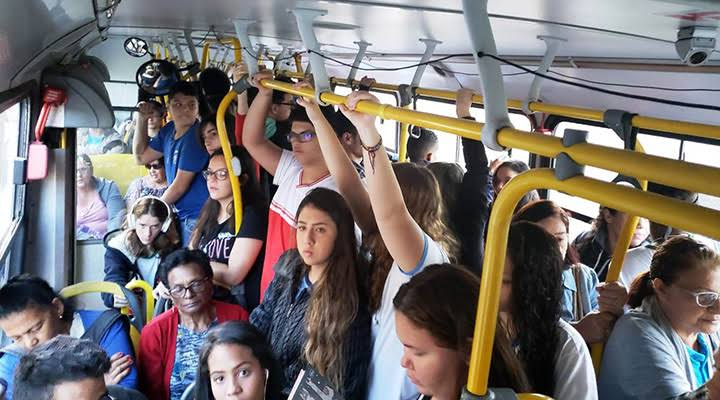

O ônibus da rodoviária de Irecê tem ponto de partida na Praça do Feijão, por volta das 6h30. Já na volta, parte normalmente às 12h20, diretamente da portaria do IFBA. O veículo é igual coração de mãe: sempre cabe mais um, nunca está lotado, mas sim cheio de amor, e seus usuários lutam bravamente por um assento.

Atenção: imagem meramente ilustrativa em nome do humor, não representa verdadeiramente o veículo citado.